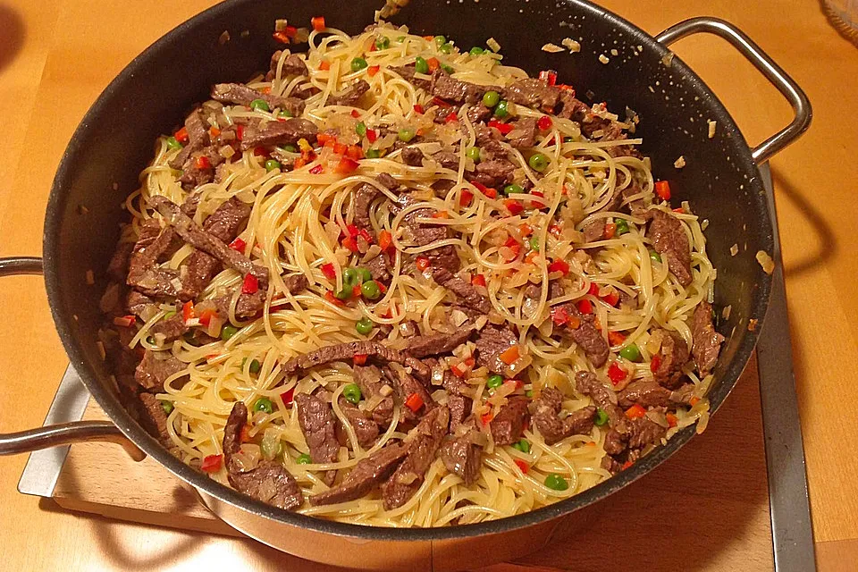

Spaghetti Frank Sinatra

Description
Spaghetti is an Italian pasta made from durum wheat, shaped into long, thin strands.
It is typically served with sauces like marinara or carbonara and can be paired with meat, vegetables, or seafood.
A staple of Italian cuisine, it's loved for its simplicity and versatility.
Ingredients for 4 portions spaghetti
- 500 g spaghetti
- 4 tbsp. of olive oil
- 3/4 cups of paprika pepper
- 1 cup of onion
- 2 pieces of garlic
- 1 steak
- 1 tsp. of paprika powder
- 1 cup of beef broth
- 1/2 cup of cream
- 2 tbsp. of frozen peas
- salt and pepper
- fresh parmesan
- 3 tbsp. of parsley, fresh or frozen
Steps
- cook 500 g spaghetti in salted water until al dente. Drain and set aside
- heat 2 tbsp olive oil in a pan, cook diced steak until browned. Remove and set aside
- in the same pan, add 2 tbsp olive oil, cook 1 cup onion, 3/4 cup red bell pepper, and 2 minced garlic cloves until soft
- stir in 1 tsp paprika powder, add 1 cup beef broth, then 1/2 cup cream. Simmer
- add 2 tbsp frozen peas and cooked steak. Let simmer
- toss in spaghetti, season with salt and pepper, cook 2 minutes
- top with parmesan and parsley